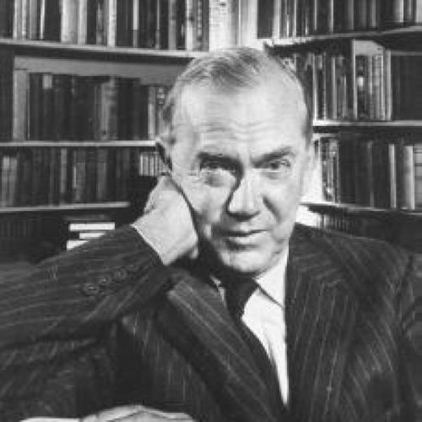

.Graham Greene [1904-1991]
Trong một lời đề tựa cho một tuyển tập truyện ngắn của mình, Graham Greene [1904-1991] nói rằng một nhà viết tiểu thuyết mang một tính cách nào đó giống như một diễn viên tiếp tục thủ vai Othello sau khi rời khỏi sân khấu. Họ được khảm bằng các nhân vật, ông nói thế. Để minh họa cho quan niệm của mình, ông nói tiếp: Một người lái xe tắc xi da đen ở vùng Caribbean có lần kể cho tôi nghe về cái xác người vớt từ biển lên. Anh ta nói: “Ông không thể nào hình dung được đó là cái xác người vì nó bâu đầy những loài thủy sinh”. Thật là một hình ảnh khủng khiếp nhưng là cái hình ảnh rất khớp với một nhà viết tiểu thuyết.
“Những hình ảnh khủng khiếp” chẳng phải là một cái gì lạc lõng khi người ta nói đến Graham Greene, nhà văn này đã có một cuộc đời viết văn kéo dài đến 60 năm! Rõ ràng là ông được “khảm” bằng những nhân vật của mình. Tuy vậy, liệu có phải vì vậy mà đến bây giờ người ta không còn nhận ra được ông nữa không. Có lần ông đã nói: “Với một cuốn tiểu thuyết, có lẽ phải cần đến một năm trời để viết, thì tác giả khi viết xong có lẽ không còn là con người giống như khi bắt đầu cầm bút nữa. Không phải chỉ các nhân vật mới phát triển mà bản thân tác giả cũng phát triển theo”.
Đối với ông, sẽ không đúng khi nói rằng ông không phát triển mặc dù người ta vẫn có thể nhận ra Graham Greene ấy. Nhưng sự phát triển của ông đã không thực sự làm thay đổi nhãn quan, cái nội tâm cũng như nhân cách của ông. Ngay cả những nhân vật của ông cũng rất gần với họ trước kia. Điều này không phải rằng Greene là một nhà văn ít tài năng sáng tạo hay kém sức tưởng tượng. Điều ở ông chính là sự phát triển theo một hướng, một loại tính cách, ở đây ông ngày càng nhận thức được sâu sắc cái ngõ cụt của con người qua mỗi lần sáng tạo của mình. Đấy là sự tiến hóa tuyến tính của một tác gia, dẫu rằng điều đó không phải là trường hợp duy nhất. Và cũng chính vì lẽ đó nên người ta nói đến cái thế giới của Greene. Cái “xứ sở của Greene”, như người ta thường nhắc tới, trong hơn 30 năm qua cảnh sắc xem ra chẳng biến đổi nhiều. Những nhân vật đến ở trên mảnh đất của ông đã tăng lên gấp bội, nhưng phong cảnh, tập tục, khí hậu gần giống xưa. Một du khách vào năm 1950 nếu bây giờ có dịp ghé thăm lại cũng chẳng đến nỗi cảm thấy ngạc nhiên và xa lạ. Xứ sở Greene là một xứ lạnh gần địa cực của tinh thần, một thế giới hạ lưu mang những đặc trưng cơ bản. Người ta còn gọi ông là “vị khách tông đồ của một thế giới đen tối hơn, nghèo khổ hơn và bạo lực hơn”.
Những tác phẩm của ông được đặc trưng bằng những tội ác của sự đồi bại. Những nhân vật được đưa vào là những con người buồn bã. Pinkie, Scobie, Querry, Brown, là những típ người ghê tởm. Thế giới của Greene tràn ngập những thầy tu, những tên mật vụ, những kẻ khủng bố, những ông chồng bị cắm sừng, những kẻ gian dâm, những cô gái điếm. Theo một nghĩa nào đó, ông là kẻ sáng tạo hết sức ưu việt tấn kịch thống thiết về tội lỗi của con người. Nhưng ông không tán dương những điều xấu xa. Pascal từng nói: “Bất chấp những nỗi khốn khổ từng hành hạ ta và nắm lấy cổ họng ta, có một bản năng trong con người mà ta không thể trấn áp được và nâng chúng ta lên”. Cái bản năng “nâng chúng ta lên” đó có thể nhìn thấy rất rõ trong sự đồi bại tràn lan khắp “xứ sở Greene”. Bởi lẽ rốt cục lại thì sự khoan dung vốn là một bộ phận trong niềm tin của một nhà văn Thiên Chúa giáo như Greene vậy. Nhưng cần lưu ý rằng Greene không phải là tín đồ Công giáo theo cái nghĩa mà ta hiểu về nhà văn Pháp Francois Mauriac. Đôi khi Greene phạm cái tội không giữ vững đức tin của mình và có sự “mập mờ về đạo lý” như người ta nhận xét về những đặc trưng của các tác phẩm của ông. Đối với Rebecca West sự mập mờ về đạo lý này tạo ra một trạng thái lẫn lộn gàn quải giữa những đức tính và những cái xấu xa, một thời tiết mà những kẻ phản bội lại gặp thời và vớ bở.
Những kẻ phản trắc đã gặp thời vì sao và như thế nào? Bản thân nhà văn đã thú nhận rằng ông có một ham muốn không từ bỏ được là làm nảy sinh sự cảm tình đối với những người nằm bên ngoài những giới hạn của cảm tình dư luận. Điều này không có nghĩa là ông đứng về phía bọn đàn áp hay phản động, mà hoàn toàn ngược lại. Bằng con đường đi riêng của mình, ông đã là một người lính thập tự chinh trong văn học chiến đấu chống lại những chế độ đàn áp nhân dân ở Mỹ La Tinh. Bất công và độc tài trong thế giới thứ ba đã trở thành một trong những cảm hứng sáng tác chính của ông. Nếu người ta gọi ông là một nhà văn hết sức giật gân về những vấn đề trí tuệ, thì ông thực ra còn là một tiểu thuyềt gia về những vấn đề chính trị vô cùng mạnh mẽ. Thật khó mà phân lọai những tác phẩm của ông thành những phạm trù riêng biệt: tôn giáo, chính trị hay giải trí.
Greene là người phát ngôn cho quyền lợi cá nhân và là kẻ đối đầu kiên quyết trước cường quyền. Những năm cuối đời ông đã tiến hành một cuộc chiến dũng cảm chống lại tội ác và tham nhũng ở miền Nam nước Pháp.
Giá trị chính của ông với tư cách là một nhà viết tiểu thuyết là ở chỗ ông là một người kể chuyện tuyệt vời, với năng lực phi thường về mặt kết cấu truyện, làm người ta hồi hợp và khả năng miêu tả sắc sảo.
Ở tuổi 80, nhà văn lão thành này còn nổi tiếng về cuộc đời sóng gió và sức sống chiến đấu hừng hực cho những phẩm chất tốt đẹp của con người, cho công bằng xã hội.
Có lần, nhà văn đã thổ lộ: “Tôi luôn luôn bị lôi cuốn tới những nước mà ở đó không khí chính trị dường như đùa bỡn với cái sống và cái chết của con người. Những chính sách cũng như sự thay đổi các chính phủ từ đảng này sang đảng nọ, tự do hay bảo thủ mà lần nào họ cũng tìm cách nặn ra một sự “thay đổi” nào đó, chẳng làm tôi mảy may quan tâm. Chỉ có những thay đổi đang diễn ra ở châu Á, châu Phi và Trung Mỹ mới có sức cuốn hút tôi. Bởi lẽ văn học cần phải góp sức vào cuộc đấu tranh chống chế độ độc tài. Tôi cố gắng góp sức lớn nhất của mình vào cuộc đấu tranh đó”.
Một lần ông còn nói: “Tôi không thể sống trong sự yên tĩnh. Qua cửa sổ tôi phải nhìn thấy biển cả mênh mông thì lòng tôi mới yên tĩnh. Ngoài đó là cả một thế giới mà tôi tha hồ tìm hiểu. Tiếng ồn ngoài đường phố ư? Nhưng chúng lại tạo ra trong tôi những cảm xúc hào hứng. Trong vô vàn thứ tôi chỉ cần nhất chiếc va li”.